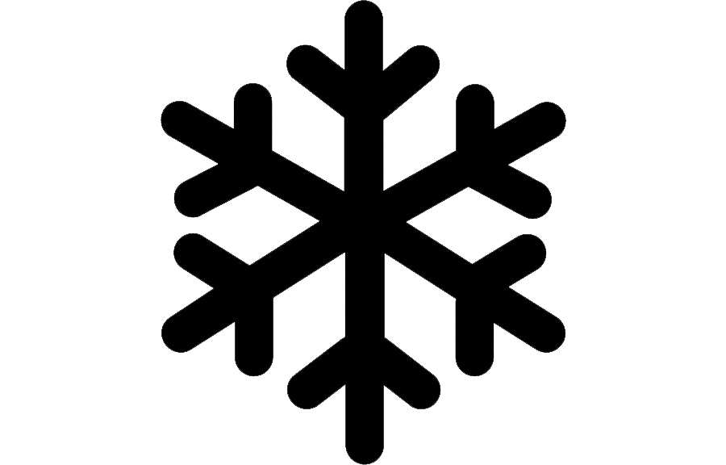
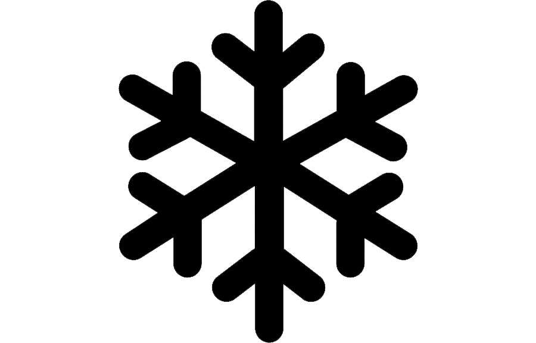

A Kata Vendégház
A Kata Vendégház légkondicionált szobákat kínál Bükön. A szálláshely közös konyhával és terasszal várja vendégeit. Grillező, ingyenes wifi és díjmentes magánparkoló szintén biztosított. A vendégház minden szobája erkélyes. Ruhásszekrény, síkképernyős TV és saját fürdőszoba szintén minden szobában rendelkezésre áll. Sopron 47 km-re, Kőszeg pedig 21 km-re van. A legközelebbi repülőtér a 82 km-re lévő Hévíz-Balaton reptér. Vendégeink elfogulatlan értékelései alapján ez Bük egyik legkedveltebb része. Olyan helyen van, hogy a családok kedvence lett! A gyerekkel utazók 9,2 pontra értékelték.
Szobák
Ha Bükfürdőn tölti nyaralását, keresse fel családi panziónkat, amely kb. 2 km-re található egy csendes mellékutcában. Néhány száz méterre található Bük központjától. A faluban vannak éttermek, bevásárlóközpont, bank, fodrász, kozmetika, masszőr, fogorvos, sebészet. A közeli Sunshine Playhouse és Crystal Tower szintén a közelben található. A szállásra érkező családokat vagy baráti társaságokat négy, kényelmesen és ízlésesen berendezett szoba várja.
 Parkolás
Wifi
 Légkondícionálás
Parkolás
Wifi
 Légkondícionálás